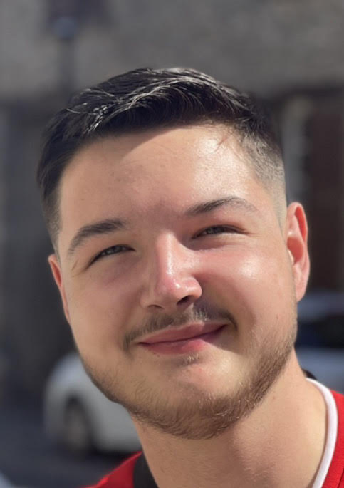
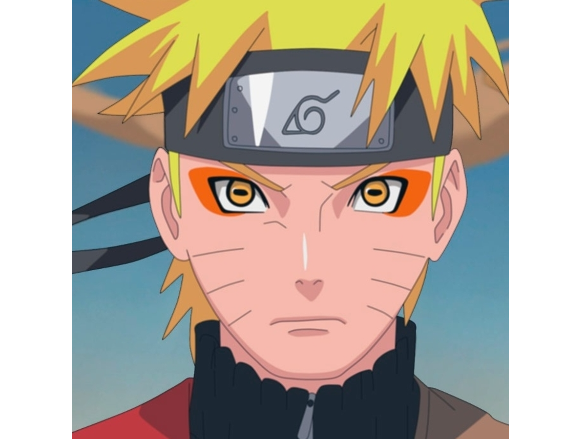

Welcome
My name is Antonin LEMESRE
I like video games such as Apex Legends, animes such as naruto and over all my family. I entered EMLV in middle 2022 and I am in a 3 years formation. I use to start coding in high school with an option called NSI, wich mean Numerical & Informatical Sciences.
Link to the official EMLV WebsiteApex legends
Apex legends is a game i used to play since day 1. I play a lot of video games, i took Apex as an exemple because i am currently playing it. Again it is something i like because it allows me to have fun with friends and to outperforms myself.

Naruto
Naruto is my favorite anime. I discovered it when i was in middle school and it quite changed my life because this anime is a real life lesson. Through the main character, I learned the power of friendship and undestood some important aspects of life. I recommand anyone to start watchign or reading it, it might be frightening because it is very long, but it is worth it.
My family
My family is the most important part of my life. It is composed of my parents, named Nadine and Pierre Emmanuel ; my big sister named Alice ; my little brother named Théotime ; and my grand-parent named Françoise and Philipe, even though we call them "Papo" and "Mamo". There are also few friends that i consider my family, such as William and Lucas, which are my friends since i am a young boy.
My other hobbies, projects and passions
- Football
- Cinema
- Dress
- Trips
- Buy a house to my parents